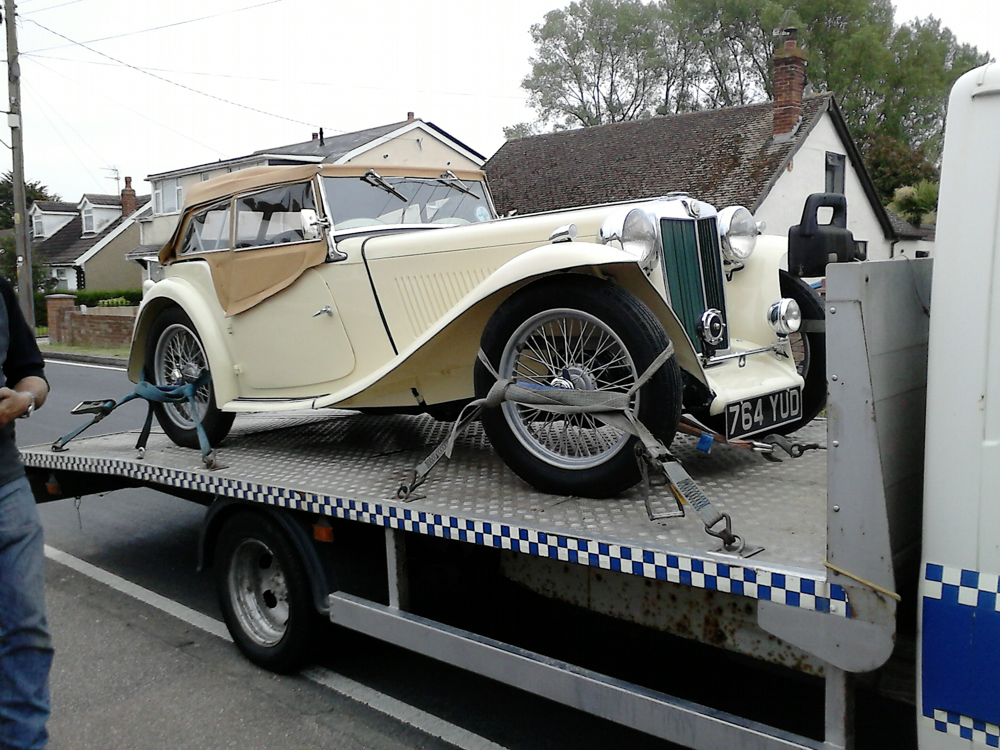
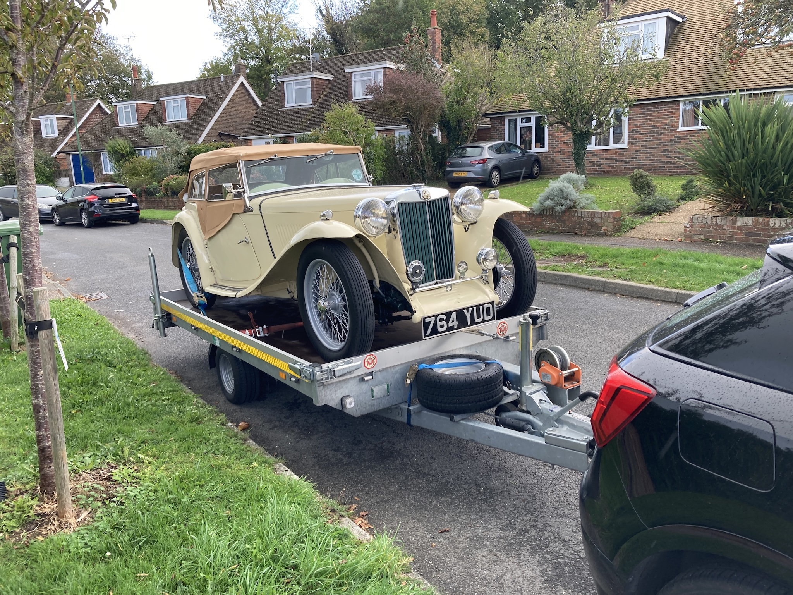

Some people seem to change their classic car or cars on a fairly regular basis. For me, however, I waited 45 years before I was in a position to buy a car that ‘should’ have been my first car. Yes, we had owned classic cars, such as a 1969 Morris 1000 traveller (that was only 20 years old when we owned it) and a 1963 Triumph Spitfire that was 38 years old when we sold it. These two cars were our daily-use cars, but in the end there was just not enough time in our busy lives to keep them both on the road.
So in 2015 I found a 1948 MG TC. Since Angela and I were both born in 1948 it seemed like an appropriate ‘hobby’ car. The car had been repatriated from the USA in 1990 and restored by the first UK owner who lived in Peacehaven. But over the three years that it took him he had put on weight and couldn’t get behind the wheel! So without having driven the car he exchanged it, along with an MGA , for a Rolls Royce.
The next private owner lived in Essex. His interest seemed to be to put the car back closer to its original state. Amongst other parts, he replaced the speedometer which, for a TC, is in front of the passenger. And no, that wasn’t due to the driver’s side being changed; TCs were only built in right-hand drive. However, the tachometer reading was 148 miles, so this owner had not really driven the car.
At that time I didn’t know much about the mechanics of a TC. I looked at the chassis for any cracks, the tyres for uneven wear and the exhaust for any signs of oil. But I fell in love with the car and so bought it.
Then I discovered that the brakes seized after about ten miles (new master cylinder needed), the handbrake cables had stretched (new cables fitted), the bracket under the radiator was rusty (a lot of dismantling along with new engine and gearbox mounts installed) and the front wheel knuckles had been put on the wrong side (dismantling and re-assembly of the front steering).
Over the years I repaired and improved the car by doing such things as replacing the rubber bushes in the springs (the TC has cart springs front and back) and fitting new brake slave cylinders. Those who frequently change their classic cars presumably like to experience a range of older cars, which I can understand. However, for me part of the enjoyment of owning a classic car is finding out about the design, mechanics and electrics of the car. It was also interesting to track down the history of the car and its various owners. Of course, the main enjoyment was not only to keep the car on the road, but to drive it. An MG TC is so different to any modern car.
However, after more than ten years of ownership the time had come to part with TC4985. Attempting to sell the car was carried out, perhaps, with limited enthusiasm; attending a couple of shows with a discreet ‘for sale’ sign on the windscreen and placing an advertisement on the MG Octagon Car Club web site. Certainly the market for cars of this age wasn’t at its best (I probably bought the car at the peak of market prices) and only a few people showed any interest.
Then I received a phone call from someone in the Netherlands. Since our son and his family live between Rotterdam and Gouda I at first thought the call was from him, using a different phone. However, the gentleman asked if the TC was still for sale and asked me to send him more photos and a video of the car with the engine running. We then had a FaceTime call during which he made an offer, which I rejected. But we then agreed on a price, subject to a final inspection. We exchanged a number of emails and he would call to ask a question about the car. Then he set a date for him and his wife (who we also met on the FaceTime call) to come over with their trailer.
It transpired that he was an MG enthusiast, was a member of the MG T-Type & Prewar Owners Holland (and a previous chairperson) and had just sold his TD so as to make room for a TC. His father had owned a TC in the same colour as TC4985 and so that is what he wanted. The car would need to be imported into the Netherlands (and VAT paid on it) so he employed a company to do the paperwork. I had to provide information such as the chassis number, with photos of both the plate on the body and the stamped number on the chassis itself. I had to scrape off the paint so as to make it visible (and paint it again afterwards).
Since his offer I hadn’t dare take the car for more than a short test run in case I broke something, but after weeks of dry weather the (rainy) day arrived. They had a bad ferry crossing and arrived later than expected. However, we took the TC for a very short run and then l drove it on to the trailer, securing it in place, in the rain. At least I could demonstrate that the windscreen wipers worked! It seems that the new owner had already bought an original type air filter bin and the air inlet manifold (TC4985 had poor quality pancake filters) and an alloy rocker cover! So I then handed over a pack of receipts, a box of odds and ends, a spare wheel, some books and finally the keys and the relevant parts of the V5C. In order to register a car overseas you need to hand over the entire V5C except the part that says you are permanently exporting the car. Then you send that, along with a letter stating the new owners name and address, to the DVLA.
We waved as they drove away, initially aiming for a car export company in Ashford to complete the paperwork, before heading to Dover. We last heard from them as they were queuing to get on the ferry, although they have invited us to visit them and see the TC when we are next in the Netherlands.
Now we come to the emotional bit. It was good to think that someone else wanted to own the TC and it was becoming harder to put it up on axle stands and crawl around on the garage floor, but I was quite attached to the car. Seeing someone drive off with the car, taking it out of our lives, left quite an empty feeling inside. Of course, this was tempered by the knowledge that the new owner would look after the car and improve it. In addition, they were a very nice couple, which made the whole process easier. However, there is now a big space in the garage, just asking to be filled.
(Written 23rd October 2025; published in WSMGOC Main Gear, Month Year.)
© David James 2025 Last updated: 23rd October 2025